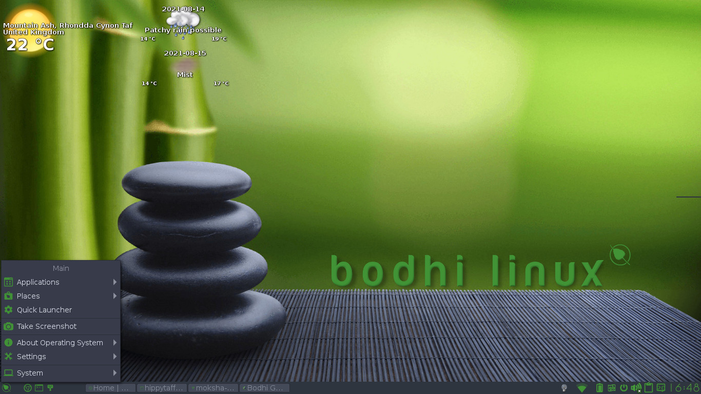
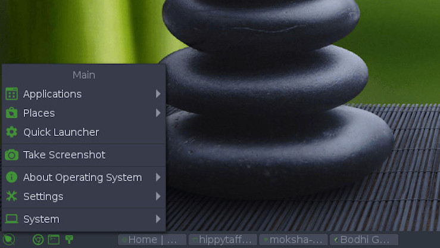
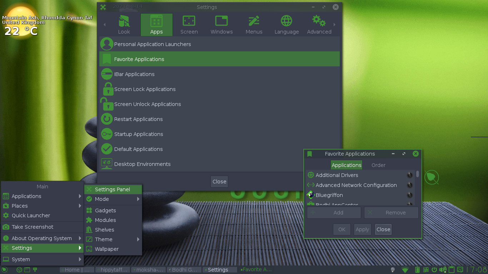
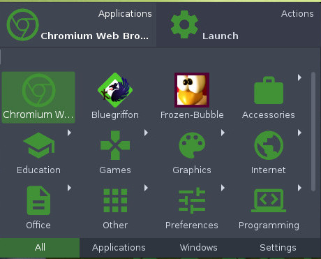
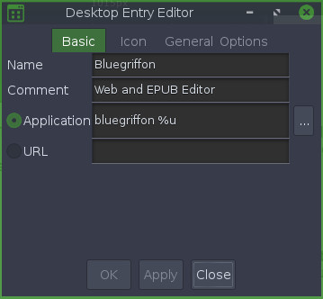

Complete Guide to Bodhi Linux
Main Menu
Computer users have become accustomed to having a "main menu" ("Menu") since the release of Windows 95. Since then, Windows has stayed consistent, putting a "Start Menu" on the bottom left hand corner of the screen - accessible via mouse click or keyboard shortcut. Apple introduced a similar feature with the "Apple Menu" which is located on the top left corner of the screen. Bodhi Linux keeps with the tradition and by default has a "Main Menu" button located on the bottom left corner of the screen.

Customizing Bodhi Linux's Menu
Introduction
Moksha provides the Menu through the use of a Start Gadget which is typically placed on a Shelf but can also be placed directly on the desktop. Bodhi's default theme comes with the Gadget placed on the bottom left corner and looks like a Bodhi Tree leaf.

In most of the default Themes the placement of the Menu is on the bottom left corner on a shelf. Additionally, in most Themes the Menu looks like the Bodhi Linux leaf logo.
Because Bodhi Linux is built on the principles of choice, the Gadget can be placed on the desktop itself (i.e., not stuck on a Shelf at all) or, a user can opt to not have a start Gadget at all.
However, it is possible to remove the Start button. This may seem an odd thing to do to people unfamiliar with Moksha. But fear not, this does not remove the menu, merely its button. Moksha's menus can be displayed by clicking on any unoccupied spot on the desktop. Note that Moksha has two menus. The Menu found by clicking a Start button or left clicking any blank spot on Bodhi Linux's desktop is known as the Main Menu. Whereas, the menu displayed by right clicking on an unoccupied spot on the desktop is the Favorites Menu. On a default installation of Bodhi Linux, the Favorites Menu is empty but as we shall see it is easy to add your own favorite applications to this menu.
 In addition to accessing Moksha's
Main Menu from either the Start button
or from the left-click on the desktop, in Bodhi
Linux there is a default key-binding to open the Main Menu
from the keyboard. It's the Menu key! On most keyboards this key is
to the right of the spacebar near the Alt and Ctrl keys and looks like the image to the right.
Naturally this keyboard shortcut can be changed by the user or
deleted altogether.
In addition to accessing Moksha's
Main Menu from either the Start button
or from the left-click on the desktop, in Bodhi
Linux there is a default key-binding to open the Main Menu
from the keyboard. It's the Menu key! On most keyboards this key is
to the right of the spacebar near the Alt and Ctrl keys and looks like the image to the right.
Naturally this keyboard shortcut can be changed by the user or
deleted altogether.
Where Did it Go?
A minor digression on using Moksha's Menu that may confuse some new users of Bodhi Linux. As you scroll down the Main Menu list, the sub-menu entries always open to the right of the menu. Ordinarily this is not a problem, but what if you open the Main Menu close to right edge of the screen? In that case the sub-menu may open and be partially or totally offscreen. It appears to be a quirk with Moksha's menu implementation, but that thought is a bit hasty. In this case you merely have to move the mouse cursor to the right and the whole menu structure moves to left revealing the hidden sub-menu items. As programmers are fond of saying, ”It is not a bug, it is a feature.” Another example of the elegance and beauty of Moksha.
Menu Structure
This section is a
brief description of the structure of Bodhi
Linux's Main Menu, although
truthfully the best way to gain familiarity with the menu is to open
it up and explore it. But nonetheless, the Main
Menu in a default
installation of Bodhi Linux lists, from top to bottom:
Applications
Contains most of the GUI applications installed on your system, arranged in sub menus based upon categories. Command line Applications will not be displayed in the Applications Menu. They can, however, be added.
Places
In a default installation of Bodhi Linux, Places allows you to open the Home folder, the Trash folder, and the (root) File system as well as mounted file systems and the default file manager's Bookmarks. Places is actually a Module and can be unloaded in which case it will disappear from the menu. You can also change the default settings of the Places Module. To do so from the Main Menu go to Settings → All → Files → Places. This will open a Places Settings dialog window where you can adjust Places to display or not to display the following: Home, Desktop, Trash, File system, Temp, and Favorites. You also have an option to not to display Places altogether in the Main Menu.
Quick Launcher
Launches the Quick Launcher Application.
Take Screen Shot
As the name suggests, this launches the screen shot application.
About operating System
Here you will find four sections:
Help
Opens the the Bodhi Quick
Start web page in the default web browser.
About Bodhi Linux
Opens the credits page, which scrolls through teams members, past
and present.
About Theme
Opens the credits page, which scrolls through teams members who
contributed to the development of the current theme you are using.
Restart Moksha
Restarts the Moksha Desktop.
Settings
Opens Moksha's Settings Panel. A tweakers paradise!
System
Here are the familiar Shutdown, Reboot, Suspend, Lock, et. al. functions.
It should be further noted that loading certain Modules or changing some of Moksha's Settings may add or remove some menu items. Furthermore, adding applications to the Favorites Menu will add Favorite Applications to the top of the Main Menu list, which brings us to our next topic.
Favorite Applications
The Favorites Menu contains a list of applications to which the user wishes quick access. This list of favorite applications can be found in either Bodhi Linux's Main Menu or by right clicking any unoccupied spot on the desktop. On a default installation of Bodhi Linux, the Favorites Menu will not show up in Bodhi Linux's Main Menu nor will the right-click to access the Favorites Menu work. This is because no applications have been added to the favorites list by default. It is the philosophy of Bodhi Linux not to try to second guess what the user wants and to keep things minimal and let the users decide what they want themselves.
Adding Terminology to Favorites
There are two methods of adding an application to the Favorites Menu. For the first method, launch the application you wish to add, say Terminology. Left click the application's icon in the upper left hand corner choose the app's name and then click Add to Favorites Menu as pictured to the right. Terminology will now appear in your Favorites Menu. Incredibly simple and truly elegant!
The second method is not much more difficult. From Bodhi Linux's Main Menu, Choose Settings → Settings Panel → Apps → Favorite Applications. This launches Moksha's Favorite Applications window, under Applications scroll down the list until you find the application you wish to add, click it to highlight it and then click the Add button. A green dot will appear beside the applications name as pictured to the left for PCManFM. (Note: the indicator may be something other than a green dot in some Profiles) Click Apply and then Ok. The application will now be added to your Favorites list and appear in the menu.
To remove an application from the Favorites Menu, launch the Favorite Applications window as was done above. Scroll through the application list, noting that applications in the Favorites Menu will have a green dot (or other indicator) by their name. Find the application you wish to remove, click it to highlight it and then click the Remove button. The green dot (or other indicator) beside the application's name will disappear. Now click Apply and then Ok. The applications will now be removed from your Favorites Menu.
If you are an avid user of the Favorites Menu and frequently use a lot of applications, you may find your Favorites Menu becomes rather long and you may desire a different order, perhaps placing the apps you access most often at the top of the list. Naturally E17 provides a means to change the order of the applications in the list. Again launch E17's Favorite Applications, only this time click on the Order tab, as pictured to the right. Find the application you wish to move, click it to highlight it. Now click either the Up or Down buttons to position it where you wish it to be in the menu. If desired you can do the same for one or more other applications. Once the order desired is created, click Apply and then Ok.
Customizing Bodhi Linux's Menu
Moksha has a rather unique approach to task of editing, adding or removing menu items. Instead of offering a separate application allowing the user to change menu items, the ability to graphically edit a menu item is incorporated into Moksha itself. To see how let's examine how to add an application to the Main Menu.
Adding an Application
Sometimes you install an application and it does not appear in the menu, this is probably the result of how the application was packaged. The two procedures outlined below for adding these two applications should apply to any application you install but for whatever reason does not install a Main Menu application entry.
The key here is to launch the application. There are two or more different ways you could do this. One is to use Moksha's Quick launcher, another is to launch the app from a terminal.
To illustrate using the Quick launcher application, first let us launch Quick Launcher It can be found in the Main Menu or launched by a key board shortcut, Alt-Esc, Ctrl-Alt-Space or Windows-Space. Once it launches start typing Archive Manager and as soon as it is displayed double click the icon to launch it.

Once the application launches, right-click application's Title bar or its icon in the window's upper left-hand corner and choose Application Name → Edit Icon. A Desktop Entry Editor window will pop up as pictured below, click on Options and then check Show In Menus and then click Apply and Close. Now your application will be in the menu under Accessories.

Now for the second method. This method is merely an alternative way to launch the Desktop Entry Editor window. In the Main Menu choose Settings →Settings Panel → Apps → Create Launcher. In the Desktop Entry Editor window which pops up fill in the following entries:
The Basic Tab
Name: Terminology
Comment: Use the command line
Application: Terminology
The Icon Tab
Icon: terminology
The General Tab
Generic name: Terminal Categories: ;Utility;TerminalEmulator;
The Options Tab
Check Show in Menus
When completed, click Apply and Close. Now Terminology will be in the menu under Accessories.
Removing an Application
Now that you have seen how to use the Desktop Entry Editor it should be obvious how you remove an entry from the menu. Launch the application you wish to remove and then left click its icon in the windows upper left hand corner and choose Application name → Edit Icon. A Desktop Entry Editor window will pop up, click on Options and then uncheck Show In Menus and then click Apply and Close. Where naturally, application name is the name of the application you wish to remove and the very first menu entry in the ”left click on the icon” context menu.
|
Prev: |
Contents: |
Next: |